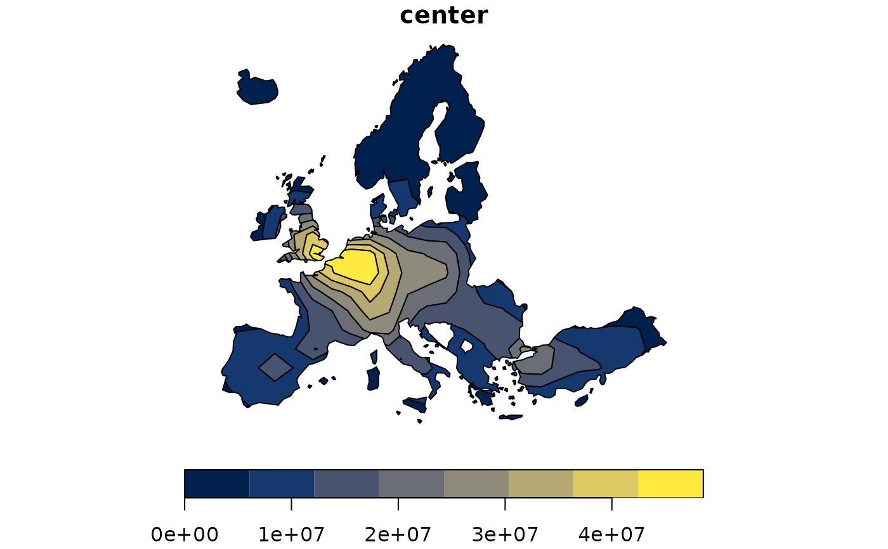

This function computes potentials as defined by J.Q. Stewart (1941).
potential(x, y, d, var, fun, span, beta)
| x | an sf object (POINT), the set of known observations to estimate the potentials from. |
|---|---|
| y | an sf object (POINT), the set of unknown units for which the function computes the estimates. |
| d | a distance matrix between known observations and unknown
units for which the function computes the estimates. Row names match the row
names of |
| var | names of the variables in |
| fun | spatial interaction function. Options are "p"
(pareto, power law) or "e" (exponential).
For pareto the interaction is defined as: (1 + alpha * mDistance) ^ (-beta).
For "exponential" the interaction is defined as:
exp(- alpha * mDistance ^ beta).
The alpha parameter is computed from parameters given by the user
( |
| span | distance where the density of probability of the spatial interaction function equals 0.5. |
| beta | impedance factor for the spatial interaction function. |
If only one variable is computed a vector is returned, if more than one variable is computed a matrix is returned.
STEWART, JOHN Q. 1941. "An Inverse Distance Variation for Certain Social Influences." Science 93 (2404): 89–90. https://doi.org/10.1126/science.93.2404.89.
library(sf) y <- create_grid(x = n3_poly, res = 200000) d <- create_matrix(n3_pt, y) pot <- potential( x = n3_pt, y = y, d = d, var = "POP19", fun = "e", span = 200000, beta = 2 ) y$OUTPUT <- pot equipot <- equipotential(y, var = "OUTPUT", mask = n3_poly) plot(equipot["center"], pal = hcl.colors(nrow(equipot), "cividis"))